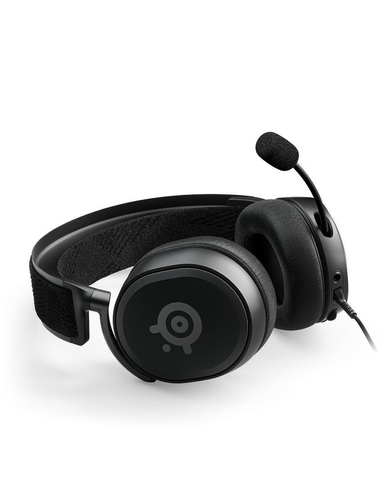
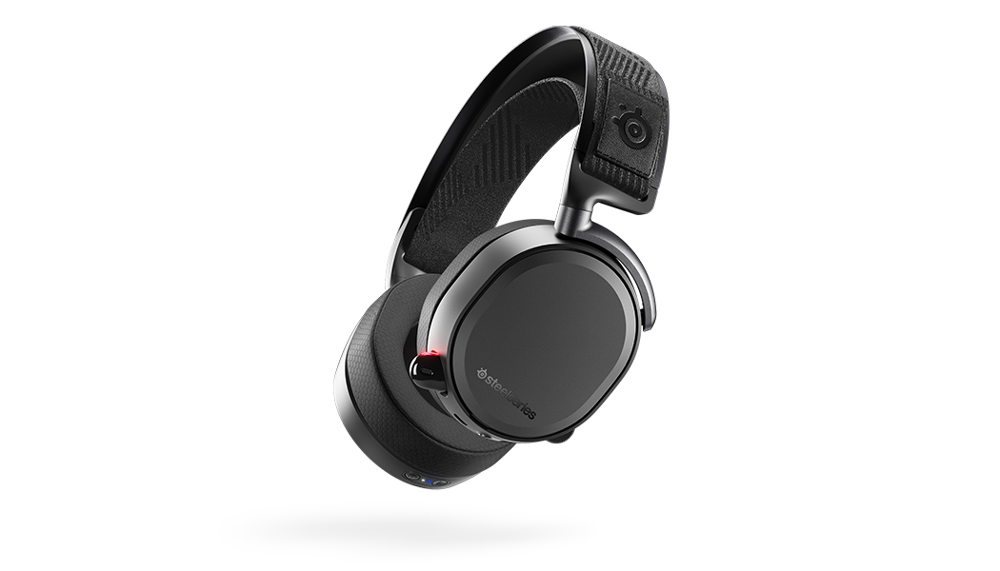
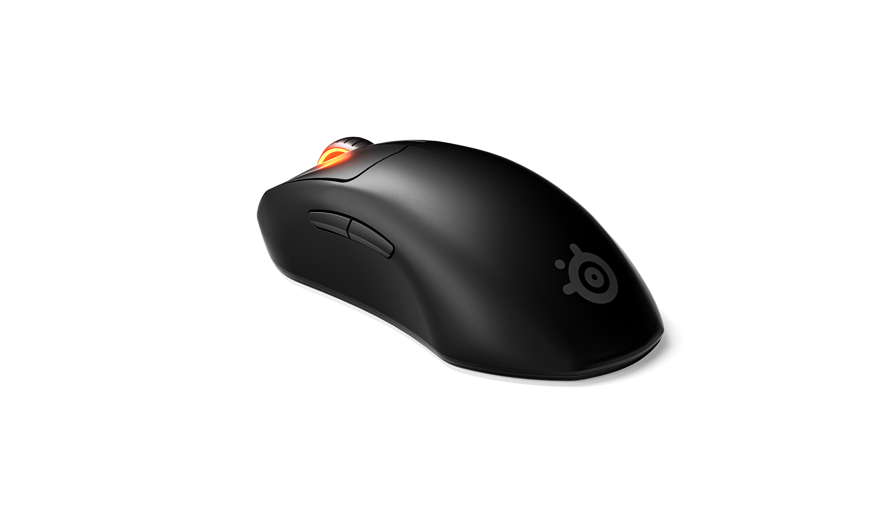
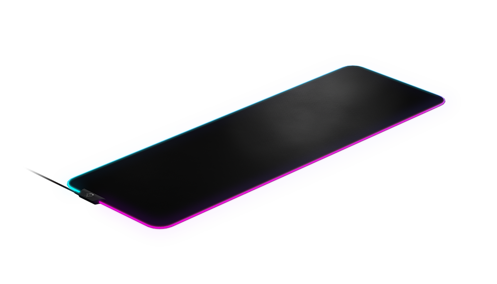

GG Store
Home
About
Contact

Arctis Prime
Headset
Advanced high fidelity audio drivers with the same premium hardware and tuning from the Arctis Pro. Built for extreme durability and lightweight performance with aluminum alloy and steel. Noise isolating leather-like ear cushions for both long-lasting comfort and noise isolation. Discord-certified ClearCast microphone. Detachable 3.5mm cable compatible with all gaming platforms including PC, Xbox, PlayStation, and Switch
$119.99
Place Order

Arctis Pro Wireless
Headset
Dual Wireless: 2.4G lossless + Bluetooth. Industry-leading hi-res capable speaker drivers. Lightweight aluminum alloy and steel construction. Swappable dual-battery system
$329.99
Place Order

Prime Mini Wireless
Mice
Smaller. Lighter. All Performance. 73g ultra lightweight and mini form factor was designed with top esports pros for sustained comfort and battle-tested durability. Prestige Optical Magnetic Switches are a first in esports and harness the power of light for response times and utilize magnetic components to last 5x longer than the competition. Pro grade 1-to-1 tracking with the TrueMove Air optical gaming sensor. Quantum 2.0 Wireless offers lag-free gaming with dual channel optimization. Over 100 hours of high-performance 1000Hz gameplay plus fast-charge
$129.99
Place Order

QcK Prism XL
Mice
Smaller. Lighter. All Performance. 73g ultra lightweight and mini form factor was designed with top esports pros for sustained comfort and battle-tested durability. Prestige Optical Magnetic Switches are a first in esports and harness the power of light for response times and utilize magnetic components to last 5x longer than the competition. Pro grade 1-to-1 tracking with the TrueMove Air optical gaming sensor. Quantum 2.0 Wireless offers lag-free gaming with dual channel optimization. Over 100 hours of high-performance 1000Hz gameplay plus fast-charge
$59.99
Place Order